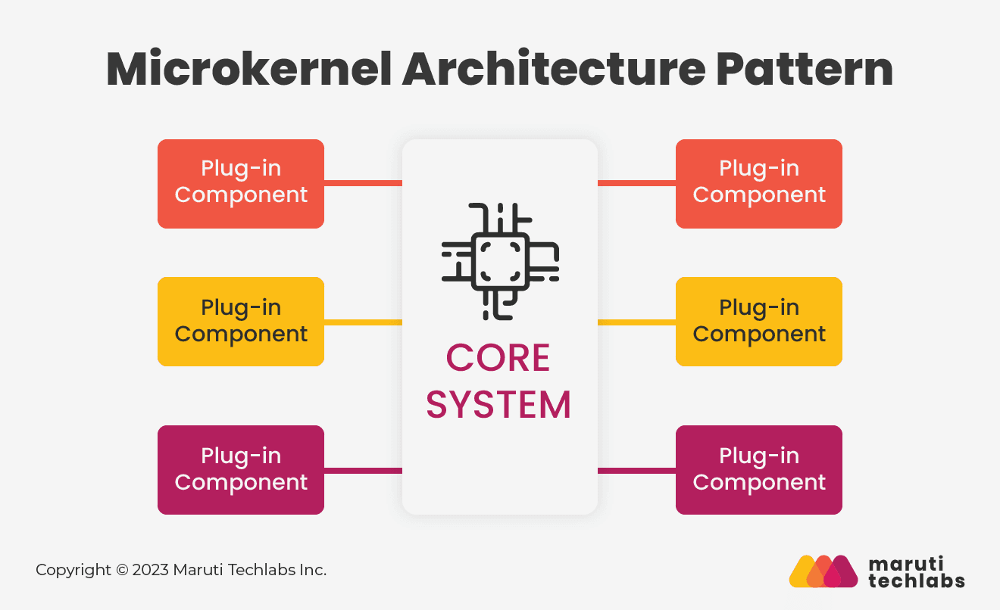

In a microkernel-based system, the core functionality is kept as small as possible, with most of the traditional services and functionality implemented as separate, user-level processes or modules that run on top of the microkernel.
Benefits
- Modularity: Microkernels promote a high degree of modularity, separating core system functions (the microkernel itself) from other services and drivers. This modularity simplifies system development and maintenance because you can add, remove, or replace components without affecting the entire system.
- Reliability: By minimizing the functionality in the microkernel and pushing most services and drivers into user-space, the overall system can become more reliable. If a user-level service fails, it’s less likely to crash the entire system. This approach can lead to increased system uptime and stability.
- Security: The reduced trusted computing base (TCB) in a microkernel architecture means there’s less code running in privileged kernel mode. This can make the system more resistant to security vulnerabilities and attacks, as there are fewer opportunities for malicious code to exploit privileged access..
- Portability: Microkernels are often more portable across different hardware platforms. The microkernel provides a hardware abstraction layer, allowing the same microkernel to run on diverse hardware with minimal changes. User-level components, such as device drivers, can be hardware-specific, making the system adaptable to different platforms.
How to Adopt
Define Your Goals and Requirements:
Clearly define the goals and requirements of your software system, considering factors like reliability, security, modularity, and extensibility.
Identify the specific areas where a microkernel architecture can provide benefits.
Identify Microkernel and User Services:
Identify and implement the microkernel’s features and performance to ensure it meets your requirements.
Determine which services and components will run in user space as separate processes or modules.
Design and implement these user-level services to provide the required functionality.